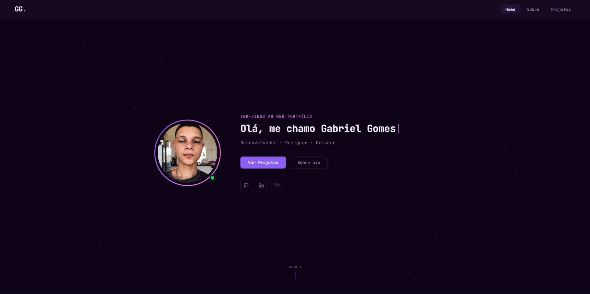
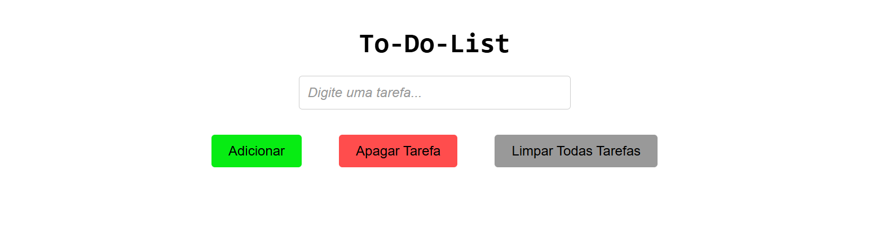

01Portfólio Pessoal
LiveSite desenvolvido para apresentar minhas habilidades, projetos e evolução como desenvolvedor. Design responsivo com animações e efeito de digitação.
Projetos que mostram minha evolução como desenvolvedor

01Site desenvolvido para apresentar minhas habilidades, projetos e evolução como desenvolvedor. Design responsivo com animações e efeito de digitação.
 02
02
E-commerce de peças e acessórios para carros de tuning. Projeto funcional, responsivo e visualmente atraente, destacando produtos, categorias e marcas do setor automotivo.

02Aplicação de lista de tarefas simples e funcional, permitindo aos usuários adicionar e remover tarefas. Interface limpa e intuitiva, com foco na usabilidade.
Mais projetos em breve. Acompanhe no GitHub!
Ver GitHub →